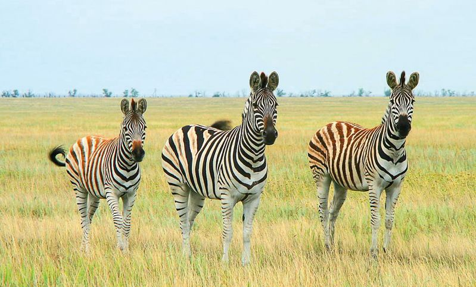
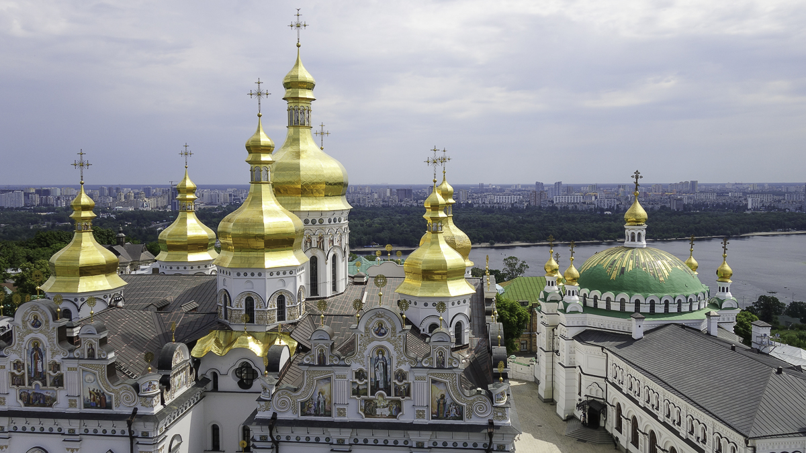
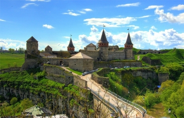

Софійський собор

Собор святої Софії — Премудрості Божої, Софія Київська або Софійський собор — християнський собор в центрі Києва, пам’ятка української архітектури та монументального живопису другого десятиріччя 11 ст. (1011-1018), одна з небагатьох уцілілих споруд часів Київської Русі. Одна з найголовніших християнських святинь Східної Європи, історичний центр Київської митрополії.
В історичному центрі древнього Києва вже тисячу років височіє грандіозний собор Святої Софії Премудрості Божої. Це найдревніший християнський храм, що повністю зберігся на східнослов’янських теренах. Народжений добою християнізації Русі, він став колискою київського християнства, державності та культури, розбудова яких здійснювалася під знаком Софії-Мудрості, якою тримається світ. Свята Софія Премудрість Божа, якій присвячено собор, – одна з фундаментальних ідеологем східного християнства, що асоціювалася з образом мудро влаштованої Богом суверенної державності. Впродовж сторіч уявлення про Святу Софію зберігалось як умова духовного життя всієї людності, без якої вона не може існувати як християнський народ, як Церква, адже поняття Св. Софії ототожнювалося з мудрістю нової християнської релігії.
Асканія-Нова
Асканія-Нова — справжнє диво не лише Приазов’я, а й усієї України. Це найстаріший степовий біосферний заповідник планети та найбільша європейська степова заповідна територія. У тутешніх екосистемах налічується більше 500 видів вищих рослин і понад 3 тисячі видів тварин. У 1984 році рада ЮНЕСКО внесла Асканію до списку еталонних територій планети.
Наріжний камінь заповідника Асканія-Нова заклав нащадок німецьких колоністів, барон Фрідріх Фальц-Фейн у 1874 році. Після того, як 17-річний Фрідріх, що змалечку цікавився природою, успішно склав вступні іспити до гімназії, батьки вирішили нагородити сина за старання і подарували йому вольєр для птахів. Далі на їхньому подвір’ї почали з’являтись і степові тварини. Згодом, вже подорослішавши, Фрідріх помітив, що вівці, яких він тримав на продаж, знищують степову рослинність у регіоні та загорівся бажанням зберегти ділянку степу в природному стані. Так хобі переросло у справу життя. У 1898 році Фальц-Фейн першим у світі вилучив з господарського використання частину своїх угідь та оголосив про відкриття заповідника. Із майже 5 тис га загальної території помістя, залишилось лише 3 тис га орних земель.
Києво-Печерська лавра
Ки́єво-Пече́рська ла́вра — київський православний монастирський комплекс. Один із найбільших християнських центрів України, визначна пам'ятка історії та архітектури. Києво-Печерська лавра належить державі, а релігійні організації користуються нею на правах оренди.
Свята Успенська Києво-Печерська Лавра є першим і найдавнішим монастирем на території сучасної України. Тільки три монастирські обителі мають в Україні в даний час статус лаври і освячені на честь Успіння Пресвятої Богородиці — Києво-Печерська, Почаївська і Святогірська. Це свідчить про особливе шанування Пресвятої Богородиці нашим православним народом, а також зв’язок монашества на Русі і древньої обителі Успіння Богоматері на Горі Афон. Заснований монастир в середині XI століття преподобними Антонієм і Феодосієм Печерськими. Зараз в печерах монастиря покояться нетлінні мощі понад 120 святих. Деякі з угодників Божих відомі всьому світу: преподобний Нестор Літописець, преподобний Ілля Муромець (його ратні подвиги описані в билинах, але це не вигаданий казковий персонаж, а реально існуючий богатир-воїн, який згодом прийняв чернечий постриг), преподобний Агапіт Печерський, лікар безкорисливий. По молитвам до всіх преподобних отців Києво-Печерських вже тисячоліття відбуваються чудеса і зцілення.
Кам'янець-Подільська фортеця
Гордістю та символом одного з найтуристичніших міст в Україні – Кам’янця-Подільського – є однойменний старовинний замок. Тут досі панує особлива атмосфера Середньовіччя. Кам’янець-Подільска фортеця поєднує в собі гармонію мальовничої природи та неприступність оборонних мурів, а це не може не приваблювати мандрівників із усіх куточків світу. Вони їдуть побачити легендарне місто, яке називають «квіткою на камені». Замок у Кам’янці-Подільському, збудований на скелястому півострові у каньйоні річки Смотрич, входить до складу історико-архітектурного заповідника «Кам'янець».
Легендa
У всі часи Кам'янець-Подільська фортеця була неприступною твердинею. 1621 року, коли хан Осман із військом підійшов до міста, його вразили міцні стіни і башти фортеці. Він спитав у своїх підданих, хто збудував це диво. Ті йому відповіли: «Аллах». Тоді Осман вигукнув: «Нехай Аллах і бере її», – і відступив.
Національний дендрологічний парк "Софіївка"

Національний дендрологічний парк «Софіївка» Національної академії наук України є шедевром світового садово-паркового мистецтва кінця XVIII - початку XIX століть. Це зразок пейзажного паркового мистецтва - композиції води, землі, каменів, рослин, архітектурних споруд і скульптур. Площа парку сягає 180 гектарів. Парк розташований на околиці старовинного міста Умані Черкаської області.
Парк заснований у 1796 році польським магнатом Станіславом Щенсним Потоцьким на честь дружини красуні-грекині Софії, і подарований їй до дня іменин в травні 1802 року. Ідея спорудження парку в романтичному стилі з використанням римської та грецької міфології належала самій Софії. Місце, на якому було створено парк «Софіївка», аж до 1796 року являло собою пагорби майже без рослин, де протікав струмок, що починався поблизу села Війтівка (тепер Родниківка). Береги струмка, затиснуті гранітними брилами, мали за прикрасу лише декілька дерев. В долині, де тепер ми бачимо розбиту колону, росли дві старі груші й десяток верб. Навколишні пагорби, вкриті скелями були місцем, де шукали собі поживи всі тварини. Долина, яка починалася від Красної Греблі, простягалася аж до нижньої частини Умані. Це чудове місце з прохолодними, прозорими й цілющими джерелами колись називалась Кам'янкою, і було настільки привабливим, що учні василіанського колегіуму обрали його для своїх розваг та ігор.